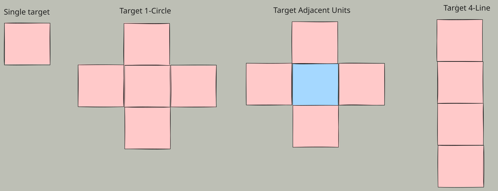
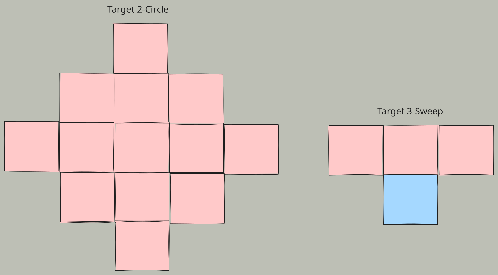

Devlog 01: Actions
Introduction
In this blog post, I’ll explain a bit about
Actions, since they are the fundamental
thing that each unit does.
(Basic) Attack
The simplest thing a unit can do: attack another
unit with their equipped weapon. This costs
0 mp and can always be done, provided
there is a target in range and the unit is not
afflicted with a Crowd
Control effect that blocks attacks
(e.g. Stun or
Petrify).
An Attack almost always does
physical damage to a single target;
Jobs that are oriented towards dealing
physical damage often derive most of their damage
from Attacks. Generally speaking, an
Attack has about a \(95\%\) probability of
hitting.
Skills
Basically, “everything else” a unit can do. This
could be casting a spell of some sort, for instance
Heal or Fire, or using an
ability (which is essentially the same as a spell,
just without magical connotations) such as
Disarm. Skills usually
cost MP to cast, though a select few
may cost HP. They are much more varied
in terms of their AoE, which could be
(non-exhaustive): single-target, target \(1\)-circle, target
adjacent units, target \(4\)-line, etc. In the
following diagram, the pink tiles represent the AoE,
and blue tiles represent the unit’s location.

Other, slightly more exotic AoE types include a \(2\)-Circle and \(3\)-Sweep:

Skills are broadly split by their
function, which can be summarized as follows.
Damage Skills
A skill whose primary purpose is to deal damage.
If the Skill is magical in nature, then
its damage is computed based on the
MATK of the attacker and
MDEF of the defender: these are
derived stats which depend on the
attributes of the attacker and defender: more
details can be found in (LINK TO DEVLOG 03).
There also is a small subset of
DamageSkills whose damage is computed
directly using the underlying
Attributes (e.g. STR or
INT) of the caster, but such cases are
rare.
Heals
A skill to restore the HP or (rarer)
MP of an ally: fairly straightforward.
The effectiveness of the Heal is
primarily determined by the unit’s
WSM.
Status Effects
A large class of Skills unto itself,
a StatusEffect is anything that,
broadly speaking, changes the state that a
unit finds itself in: perhaps by temporarily
increasing or decreasing a certain stat, forbidding
certain types of actions, or applying damage each
time the unit takes a turn
(e.g. Poison).
Buffs
A StatusEffect that temporarily
increases one or more of the target’s stats, for
instance a spell that gives the target \(+25\%\) to
TGH for \(3\) turns.
Debuffs
A StatusEffect that temporarily
decreases one or more of the target’s stats, for
instance a spell that gives the target \(-25\%\) to
STR for \(3\) turns.
Crowd Control
A Skill that applies a
StatusEffect that temporarily prevents
the target from taking certain types of actions. I
will elaborate on all the types of
CrowdControl in a future blog post, but
for now this will suffice. For instance, a unit with
the Stun StatusEffect
cannot take any actions.
Misc.
Miscellaneous effects that do not fit into any of
the other three categories. For instance: - A spell
that temporarily increases a unit’s movement budget,
or a spell that heals a unit by \(10\%\) of its max
HP per turn - A spell that applies a
non-CrowdControl effect, for instance a
temporarily lowered movement budget, or
Poison (deals magic damage per
turn).
Costs
Every skill has a base_cost and a
cost_scaling. The total cost of the
skill is computed according to the formula: \[\text{TotalCost} =
\text{BaseCost} + \text{CostScaling}\cdot
(\text{UnitLevel})^{0.6}.\] Skills that cost
HP use an identical formula, except
they drawn from the unit’s HP pool
instead of MP. A Skill has
no “cooldown”: any time a unit has sufficient
MP, they may cast
Skill.